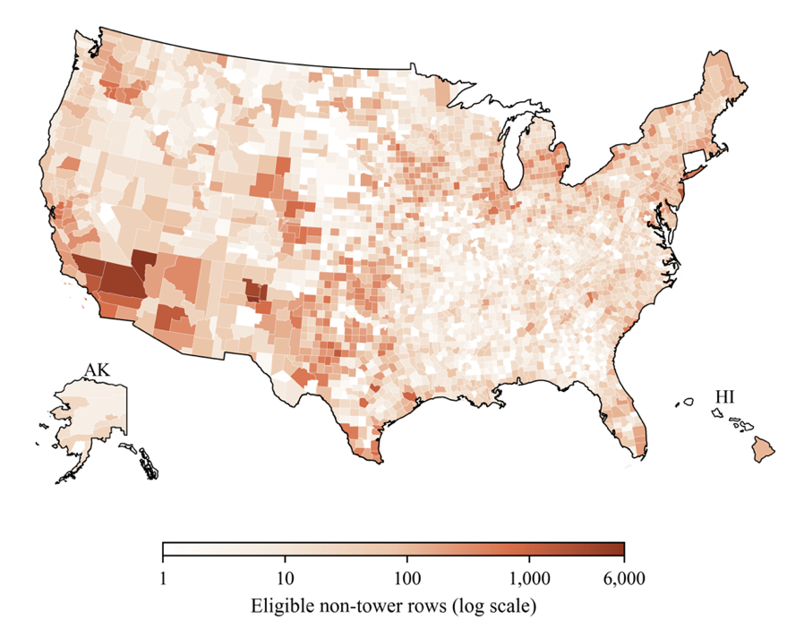

Where energy infrastructure meets natural hazards.
Explore U.S. energy infrastructure exposure and county social vulnerability.
Explore maps
Study overview
We map 205,783 non-tower energy-infrastructure features across 50 states and examine their exposure to five hazard indicators: earthquake shaking, flooding, wildfire potential, hurricane wind, and snowpack water equivalent.
Acknowledgments
We thank the Ohio Supercomputer Center (OSC) for its support. This research was supported in part by the Cross Disciplinary Integration Grant (CDIG) from the College of Architecture and Environmental Design at Kent State University.